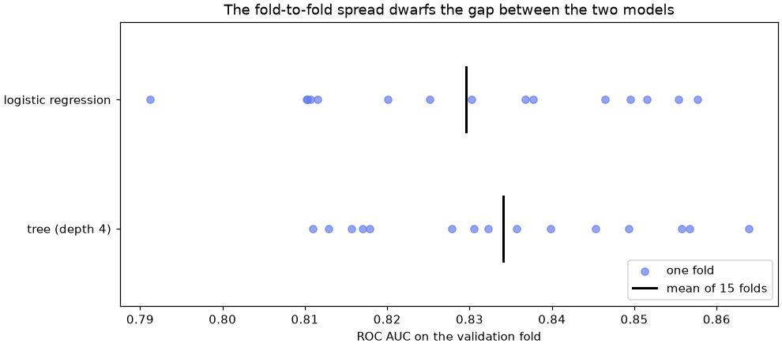

🔄 Lesson 1.3: Cross-Validation
Stop trusting a single lucky (or unlucky) split: grade every model on several rotating validation folds, and get a score you can defend.
🎯 Learning Objectives
By the end of this lesson, you will be able to:
- Explain why one train/validation split gives a noisy score, and how k-fold cross-validation averages that noise away
- Run
cross_val_scoreandcross_validatewith a stratified, shuffled splitter, and report a mean with its spread - Keep preprocessing inside the folds by cross-validating a
make_pipelineinstead of pre-scaled data - Compare two models fold by fold on identical folds, and get out-of-fold predictions with
cross_val_predict - Choose
TimeSeriesSplitorGroupKFoldwhen rows are related by time or by group
In This Lesson
🎲 One Split Is One Opinion
In Lesson 1.2 you saw that a test score wobbles: a different shuffle puts different customers in the held-out pile, some easy to predict and some hard, so the grade depends partly on luck. A validation set has the same problem, and it also takes rows away from training. Here is a quick reminder of the size of the wobble, this time for a depth-4 tree and ten seeds.
import numpy as np
import pandas as pd
from sklearn.model_selection import train_test_split
from sklearn.tree import DecisionTreeClassifier
customers = pd.read_csv("data/customers_churn.csv")
features = ["tenure_months", "orders_12m", "spend_12m", "avg_order_value", "days_since_last_order",
"returns_12m", "return_rate", "support_tickets_12m", "discount_share", "app_user"]
X = customers[features]
y = customers["churned"]
scores = []
for seed in range(10):
X_a, X_b, y_a, y_b = train_test_split(X, y, test_size=0.25, stratify=y, random_state=seed)
tree = DecisionTreeClassifier(max_depth=4, random_state=42).fit(X_a, y_a)
scores.append(tree.score(X_b, y_b))
print(np.round(scores, 3))
print(f"lowest {min(scores):.3f} highest {max(scores):.3f}")Output
[0.859 0.862 0.879 0.868 0.869 0.867 0.863 0.866 0.874 0.858]
lowest 0.858 highest 0.879Same model, same settings, same data: only the shuffle changed, and the accuracy moved by about two points. Now imagine comparing two models whose true difference is one point. On a single split, luck alone could crown either one. (This loop splits the whole table ten times, which is fine for a thought experiment. In real work you never touch the test set this way.)
💡 Mental Model: One Exam or Five Quizzes
A teacher who grades a student on one exam learns something, but a bad night's sleep or a lucky choice of questions can swing the result. Five shorter quizzes, each covering different material, give a steadier picture, and the spread of the five grades tells the teacher how much to trust the average. Cross-validation gives your model five quizzes instead of one exam, and it does so without using the final exam (the test set) at all.
For the rest of this lesson, use the course's standard split and keep the 1,500 test customers locked away. Everything below happens inside the 4,500 training customers.
X_train, X_test, y_train, y_test = train_test_split(
X, y, test_size=0.25, stratify=y, random_state=42
)
print(X_train.shape, X_test.shape)Output
(4500, 10) (1500, 10)🔄 K-Fold Cross-Validation
K-fold cross-validation cuts the training rows into k equal parts called folds. It then trains k times. Each time, one fold is held out for validation and the model is trained on the other k - 1 folds. Every training row is used for validation exactly once, and you get k scores instead of one.
The way to make folds in scikit-learn is a splitter object. Its split method yields, for each round, the row positions to train on and the row positions to validate on. Write the loop by hand once, so that nothing about cross-validation is magic:
from sklearn.model_selection import StratifiedKFold
cv = StratifiedKFold(n_splits=5, shuffle=True, random_state=42)
fold_scores = []
for fold, (train_idx, val_idx) in enumerate(cv.split(X_train, y_train), start=1):
tree = DecisionTreeClassifier(max_depth=4, random_state=42)
tree.fit(X_train.iloc[train_idx], y_train.iloc[train_idx])
score = tree.score(X_train.iloc[val_idx], y_train.iloc[val_idx])
fold_scores.append(score)
print(f"fold {fold}: train {len(train_idx)}, validate {len(val_idx)}, "
f"churn rate {y_train.iloc[val_idx].mean():.3f}, accuracy {score:.3f}")
print(f"mean {np.mean(fold_scores):.3f}, std {np.std(fold_scores):.3f}")Output
fold 1: train 3600, validate 900, churn rate 0.164, accuracy 0.859
fold 2: train 3600, validate 900, churn rate 0.166, accuracy 0.866
fold 3: train 3600, validate 900, churn rate 0.166, accuracy 0.866
fold 4: train 3600, validate 900, churn rate 0.166, accuracy 0.873
fold 5: train 3600, validate 900, churn rate 0.166, accuracy 0.850
mean 0.863, std 0.008Five models, each trained on 3,600 customers and graded on a different 900. train_idx and val_idx are positions (0, 1, 2, ...), not index labels, which is why the loop uses .iloc. A fresh tree is created in every round: reusing a fitted model across folds would let one round's training leak into the next.
You will rarely write that loop again, because cross_val_score does the same thing in one line. It clones the estimator for every fold (so you never hand it a fitted model by accident), fits, scores and returns the scores as an array.
from sklearn.model_selection import cross_val_score
tree = DecisionTreeClassifier(max_depth=4, random_state=42)
scores = cross_val_score(tree, X_train, y_train, cv=cv)
print(scores.round(3))
print(f"accuracy {scores.mean():.3f} +/- {scores.std():.3f}")Output
[0.859 0.866 0.866 0.873 0.85 ]
accuracy 0.863 +/- 0.008The same five numbers as the hand-written loop, because the same splitter object with the same random_state produced the same folds. Report the result as a mean plus or minus the standard deviation of the fold scores. The mean is your estimate; the spread tells the reader how much the estimate depends on which customers were in the fold.
⚠️ Cross-Validation Evaluates a Recipe, Not a Model
cross_val_score fits five models and then throws them all away. What it scores is the recipe: "a depth-4 tree trained on about 3,600 Pinecrest customers". When you are happy with the recipe, you fit it once more on all 4,500 training rows, and that model is the one you test and use. Nothing from the five fold models carries over.
⚖️ Stratified and Shuffled Folds
You can also pass a plain number, cv=5. For a classifier, scikit-learn then uses StratifiedKFold(5), which keeps the churn rate the same in every fold, but without shuffling: fold 1 is drawn from the first rows of the table, fold 5 from the last. For a regressor, cv=5 means plain KFold(5), also unshuffled. That is fine when the rows are in random order, and dangerous when they are not. Watch what happens when the training table happens to be sorted by the target, as exports from some databases are:
from sklearn.model_selection import KFold
sorted_train = X_train.assign(churned=y_train).sort_values("churned")
X_sorted, y_sorted = sorted_train[features], sorted_train["churned"]
for name, splitter in [("KFold(5)", KFold(5)),
("StratifiedKFold", StratifiedKFold(5, shuffle=True, random_state=42))]:
rates = [y_sorted.iloc[val].mean() for _, val in splitter.split(X_sorted, y_sorted)]
acc = cross_val_score(tree, X_sorted, y_sorted, cv=splitter)
print(f"{name:16s} churn rate per fold {np.round(rates, 2)} accuracy {acc.mean():.3f}")Output
KFold(5) churn rate per fold [0. 0. 0. 0. 0.83] accuracy 0.796
StratifiedKFold churn rate per fold [0.16 0.17 0.17 0.17 0.17] accuracy 0.863Unshuffled KFold on sorted rows produces folds with no churners at all and one fold made mostly of churners. Every round trains on a distorted world, and the "accuracy" is meaningless. A stratified, shuffled splitter does not care about row order. The course habit: build the splitter yourself, StratifiedKFold(n_splits=5, shuffle=True, random_state=42) for classification and KFold(n_splits=5, shuffle=True, random_state=42) for regression, unless the rows are related (the last section of this lesson).
💡 How Many Folds?
Five or ten. More folds mean each model trains on more data (closer to the final model) but take longer, and the fold scores, computed on smaller validation folds, get noisier. With 4,500 rows, five folds give 900 validation rows each, plenty for a stable accuracy. With a few hundred rows, use ten folds, or repeat five folds several times (coming up below).
🧪 Preprocessing Inside the Folds
Logistic regression needs scaled features. In Lesson 1.1 you fitted a StandardScaler on X_train and then trained the model. If you cross-validate on that pre-scaled data, every validation fold has already been seen by the scaler: its mean and standard deviation were computed with the validation rows included. That is the same leak as fitting the scaler on the test set, just smaller and better hidden.
The fix is to hand cross_val_score the scaler and the model together, so that both are fitted inside every round on the training folds only. make_pipeline glues them into one estimator. Lesson 2.2 is all about pipelines; for now, all you need is that a pipeline behaves like a single model with fit and predict, and that it fits its steps in order.
from sklearn.pipeline import make_pipeline
from sklearn.preprocessing import StandardScaler
from sklearn.linear_model import LogisticRegression
logreg = make_pipeline(StandardScaler(), LogisticRegression())
print(logreg)
scores = cross_val_score(logreg, X_train, y_train, cv=cv)
print(f"logistic regression accuracy {scores.mean():.3f} +/- {scores.std():.3f}")Output
Pipeline(steps=[('standardscaler', StandardScaler()),
('logisticregression', LogisticRegression())])
logistic regression accuracy 0.852 +/- 0.009Here the leak from pre-scaling is tiny, because a mean and a standard deviation computed from 3,600 rows hardly change when 900 more are added. But the habit matters more than this instance: when the preprocessing learns more from the data (picking the best features, filling gaps with group averages, encoding categories by their churn rate), the leak can make a useless model look excellent. Common mistake 1 below shows a dramatic case.
📋 More Than One Score
cross_val_score returns one metric. Its bigger sibling, cross_validate, can compute several metrics in the same rounds and also score each model on its own training folds. Here it compares an unlimited-depth tree with the depth-4 tree. Besides accuracy it asks for "roc_auc", a measure of how well the model ranks churners above non-churners (0.5 is random, 1.0 is perfect). Lesson 1.4 explains it properly.
from sklearn.model_selection import cross_validate
for depth in [4, None]:
results = cross_validate(
DecisionTreeClassifier(max_depth=depth, random_state=42), X_train, y_train, cv=cv,
scoring=["accuracy", "roc_auc"], return_train_score=True,
)
summary = pd.DataFrame(results).drop(columns=["fit_time", "score_time"]).mean()
print(f"max_depth={depth}")
print(summary.round(3).to_string())Output
max_depth=4
test_accuracy 0.863
train_accuracy 0.875
test_roc_auc 0.839
train_roc_auc 0.857
max_depth=None
test_accuracy 0.815
train_accuracy 1.000
test_roc_auc 0.663
train_roc_auc 1.000cross_validate returns a dictionary of arrays: test_accuracy, train_accuracy and so on, plus fit_time and score_time (dropped here because timings differ on every computer). In scikit-learn's naming, "test" in these keys means the validation fold; your real test set is still untouched.
The unlimited tree scores a perfect 1.000 on its own training folds and much worse on the validation folds: it memorizes. The depth-4 tree's train and validation scores are close, which is what a model that generalizes looks like. Comparing the two columns is the quickest overfitting check you have, and it costs one argument.
📊 Comparing Models Fairly
The point of all this is to choose between models without spending the test set. Two rules make a comparison fair:
- Same folds for every model. Pass the same splitter object (same
random_state), so each model is graded on exactly the same customers in each round. Then the scores are paired, and you can compare round by round. - Enough rounds to see the noise.
RepeatedStratifiedKFoldruns 5-fold cross-validation several times with different shuffles. Three repeats of five folds give 15 paired scores per model.
from sklearn.model_selection import RepeatedStratifiedKFold
rcv = RepeatedStratifiedKFold(n_splits=5, n_repeats=3, random_state=42)
models = {
"tree (depth 4)": DecisionTreeClassifier(max_depth=4, random_state=42),
"logistic regression": logreg,
}
auc = pd.DataFrame({name: cross_val_score(model, X_train, y_train, cv=rcv, scoring="roc_auc")
for name, model in models.items()})
print(auc.agg(["mean", "std"]).round(3))
diff = auc["tree (depth 4)"] - auc["logistic regression"]
print(f"tree better in {(diff > 0).sum()} of {len(diff)} rounds; mean difference {diff.mean():+.3f}")Output
tree (depth 4) logistic regression
mean 0.834 0.83
std 0.017 0.02
tree better in 12 of 15 rounds; mean difference +0.004The tree wins 12 of the 15 rounds, which sounds convincing, but its average lead is 0.004, while a single model's score moves by 0.02 from fold to fold (the standard deviation) and by about 0.07 between its best and worst folds. On one unlucky split, logistic regression could easily have come out on top. The honest summary: these two models rank customers about equally well. The chart makes the point visually.
import matplotlib.pyplot as plt
fig, ax = plt.subplots(figsize=(9, 4), layout="constrained")
for i, name in enumerate(auc.columns):
ax.scatter(auc[name], np.full(len(auc), i), color="#667eea", alpha=0.7, label="one fold" if i == 0 else None)
ax.plot([auc[name].mean()] * 2, [i - 0.25, i + 0.25], color="black", linewidth=2,
label="mean of 15 folds" if i == 0 else None)
ax.set_yticks(range(len(auc.columns)), auc.columns)
ax.set_ylim(-0.6, len(auc.columns) - 0.4)
ax.set_xlabel("ROC AUC on the validation fold")
ax.set_title("The fold-to-fold spread dwarfs the gap between the two models")
ax.legend(loc="lower right")
plt.show()
⚠️ The "+/-" Is a Rough Guide
The folds share most of their training rows, so the 15 scores are not independent measurements, and textbook confidence intervals built from them come out too narrow. Treat the spread as a sense of scale, look at the paired differences, and be suspicious of any winner whose lead is smaller than the fold-to-fold wobble. When two models are that close, prefer the simpler or cheaper one.
🔁 Out-of-Fold Predictions
Sometimes you want predictions, not scores: to draw a chart, to pick a decision threshold, or to look at the customers the model gets wrong. cross_val_predict returns, for every training row, the prediction made by the fold model that did not train on that row. These out-of-fold predictions are honest in the same way validation scores are.
from sklearn.model_selection import cross_val_predict
oof_proba = cross_val_predict(logreg, X_train, y_train, cv=cv, method="predict_proba")[:, 1]
print(oof_proba.shape)
oof = pd.DataFrame({"churn_probability": oof_proba, "churned": y_train.to_numpy()})
oof["risk_decile"] = pd.qcut(oof["churn_probability"].rank(method="first"), 10, labels=range(1, 11))
print(oof.groupby("risk_decile", observed=True)["churned"].mean().round(3).to_string())Output
(4500,)
risk_decile
1 0.022
2 0.033
3 0.033
4 0.040
5 0.056
6 0.089
7 0.167
8 0.258
9 0.380
10 0.576You now have one honest churn probability for each of the 4,500 training customers, and the deciles tell the same story as the test-set chart in Lesson 1.1, without touching the test set. Lesson 1.4 uses exactly these out-of-fold probabilities to choose a decision threshold.
💡 Scores from Pooled Predictions Are Not the Same Thing
A metric computed on all out-of-fold predictions at once is close to, but not the same as, the mean of the per-fold scores, because the five fold models are slightly different. Use cross_val_score or cross_validate for the performance estimate, and cross_val_predict for analysis and plots.
⚠️ Common Mistakes
Cross-validation mistakes rarely crash. Most of them produce a score that is quietly too good, which is worse.
1. Choosing Features Before Cross-Validating
This experiment uses pure noise: 200 "customers" with 5,000 random features and a random yes-or-no label. No model can honestly beat 50% on it. The leaky version picks the 20 features most related to the label using all 200 rows, then cross-validates. The honest version puts the selection inside a pipeline. (SelectKBest is covered in Lesson 2.4; here it is just "keep the 20 columns that look most related to y".)
from sklearn.feature_selection import SelectKBest
rng = np.random.default_rng(42)
X_noise = rng.normal(size=(200, 5000))
y_noise = rng.integers(0, 2, size=200)
noise_cv = StratifiedKFold(5, shuffle=True, random_state=42)
X_picked = SelectKBest(k=20).fit_transform(X_noise, y_noise)
leaky = cross_val_score(LogisticRegression(), X_picked, y_noise, cv=noise_cv)
honest = cross_val_score(make_pipeline(SelectKBest(k=20), LogisticRegression()), X_noise, y_noise, cv=noise_cv)
print(f"leaky {leaky.mean():.3f}")
print(f"honest {honest.mean():.3f}")Output (no error, and that is the problem)
leaky 0.825
honest 0.595What happened: the honest estimate, 0.595, is not exactly 0.5, because with only 200 rows a cross-validated score on random labels can land anywhere from about 0.4 to 0.6 by luck. The leaky 0.825 is far outside that range. With 5,000 random columns, some will match the random labels well by pure chance, including on the rows that later become validation folds. Selecting them with all the rows hands the model the answers. Fix: every step that learns from data goes inside the pipeline that you cross-validate, so it is refitted on the training folds of each round.
2. A Seed Without a Shuffle
KFold(n_splits=5, random_state=42)Error
ValueError: Setting a random_state has no effect since shuffle is False. You should leave random_state to its default (None), or set shuffle=True.What it means: an unshuffled splitter is not random, so a seed has nothing to control, and scikit-learn refuses rather than let you believe the folds are shuffled. Fix: add shuffle=True, or drop random_state if you really want the rows in their original order (time-ordered data uses TimeSeriesSplit instead).
3. Misspelling a Scorer Name
The real message lists every valid scorer name (about 60 of them), so this block prints just its beginning and end:
try:
cross_val_score(hgb, X_d, y_d, cv=time_folds, scoring="mean_absolute_error")
except ValueError as err:
message = str(err)
print(type(err).__name__)
print(message.split(" among ")[0], "...")
print("...", message.split("}, ")[-1])Output
InvalidParameterError
The 'scoring' parameter of cross_val_score must be a str ...
... a callable or None. Got 'mean_absolute_error' instead.What it means: InvalidParameterError is scikit-learn's kind of ValueError for a bad argument, raised before any model is fitted. Error metrics exist only as negated scorers ("neg_mean_absolute_error", "neg_root_mean_squared_error"), because scorers must be "higher is better". Fix: use the neg_ name and flip the sign when you print. sklearn.metrics.get_scorer_names() lists every valid name.
4. Reporting the Best Fold
scores = cross_val_score(tree, X_train, y_train, cv=cv)
print(f"best fold {scores.max():.3f} honest estimate {scores.mean():.3f} +/- {scores.std():.3f}")Output (no error, and that is the problem)
best fold 0.873 honest estimate 0.863 +/- 0.008What happened: picking the luckiest fold (or the luckiest seed, or the luckiest of many experiments) and reporting it alone is the single-split problem again, with extra steps. Fix: report the mean and the spread of all folds, and say how the folds were made.
5. Using the Test Set Inside Cross-Validation
Cross-validating on all 6,000 rows (training plus test) and then "confirming" on the test set is not a confirmation: the test rows already took part in every comparison you made. There is no error message for this one. Fix: cross-validate on X_train only, choose your model, fit it on all of X_train, and score the test set once, at the end. The project does exactly this.
🛠️ Project: A Fair Model Bake-Off
Pinecrest's analytics lead asks you to recommend one of four churn models, with evidence that will survive a skeptical review. You will compare a baseline, logistic regression, a depth-4 tree and a random forest on identical repeated folds, pick a winner on the training data alone, and then open the test set once to confirm. Work in a fresh notebook, lesson_1_3_project. Allow about 35 minutes.
🛠️ Step 1: Load, split and lock the test set (5 min)
Start fresh with the course's standard split.
import numpy as np
import pandas as pd
from sklearn.model_selection import train_test_split, RepeatedStratifiedKFold, cross_validate
customers = pd.read_csv("data/customers_churn.csv")
features = ["tenure_months", "orders_12m", "spend_12m", "avg_order_value", "days_since_last_order",
"returns_12m", "return_rate", "support_tickets_12m", "discount_share", "app_user"]
X_train, X_test, y_train, y_test = train_test_split(
customers[features], customers["churned"], test_size=0.25, stratify=customers["churned"], random_state=42
)
print(len(X_train), len(X_test))Output
4500 1500🛠️ Step 2: Define the candidates (5 min)
Logistic regression gets its scaler inside a pipeline; the trees do not need scaling.
from sklearn.dummy import DummyClassifier
from sklearn.pipeline import make_pipeline
from sklearn.preprocessing import StandardScaler
from sklearn.linear_model import LogisticRegression
from sklearn.tree import DecisionTreeClassifier
from sklearn.ensemble import RandomForestClassifier
candidates = {
"baseline": DummyClassifier(strategy="prior"),
"logistic regression": make_pipeline(StandardScaler(), LogisticRegression()),
"tree (depth 4)": DecisionTreeClassifier(max_depth=4, random_state=42),
"random forest": RandomForestClassifier(n_estimators=200, min_samples_leaf=5, random_state=42, n_jobs=-1),
}
print(list(candidates))Output
['baseline', 'logistic regression', 'tree (depth 4)', 'random forest']strategy="prior" predicts "stays" for everyone, like "most_frequent", but its predict_proba returns the churn rate for everyone, which gives an AUC of exactly 0.5: the "knows nothing" yardstick for ranking.
🛠️ Step 3: Cross-validate every candidate on the same folds (10 min)
One splitter, three repeats of five folds, two metrics. Keep every fold score: you need them in Step 4.
rcv = RepeatedStratifiedKFold(n_splits=5, n_repeats=3, random_state=42)
fold_auc = {}
rows = []
for name, model in candidates.items():
res = cross_validate(model, X_train, y_train, cv=rcv, scoring=["accuracy", "roc_auc"])
fold_auc[name] = res["test_roc_auc"]
rows.append({"model": name,
"accuracy": res["test_accuracy"].mean(), "acc_std": res["test_accuracy"].std(),
"roc_auc": res["test_roc_auc"].mean(), "auc_std": res["test_roc_auc"].std()})
board = pd.DataFrame(rows).set_index("model").sort_values("roc_auc", ascending=False)
print(board.round(3))Output
accuracy acc_std roc_auc auc_std
model
random forest 0.871 0.008 0.867 0.018
tree (depth 4) 0.864 0.008 0.834 0.017
logistic regression 0.852 0.008 0.830 0.020
baseline 0.835 0.000 0.500 0.000🛠️ Step 4: Check the lead fold by fold (5 min)
Is the top model's lead bigger than the noise? Compare it with the runner-up on the 15 paired folds.
best, second = board.index[0], board.index[1]
diff = fold_auc[best] - fold_auc[second]
print(f"{best} vs {second}: ahead in {(diff > 0).sum()} of {len(diff)} folds, "
f"mean lead {diff.mean():+.3f} (smallest {diff.min():+.3f}, largest {diff.max():+.3f})")Output
random forest vs tree (depth 4): ahead in 15 of 15 folds, mean lead +0.033 (smallest +0.013, largest +0.063)The forest beats the depth-4 tree in every one of the 15 paired folds, by at least 0.013. Unlike the tree-versus-logistic-regression comparison earlier, this lead is consistent, so it is safe to call it real for this data.
🛠️ Step 5: Open the test set, once (5 min)
Fit the chosen recipe on all 4,500 training rows and score it on the locked test set. Also score the runner-up, purely to see whether the test set agrees with the cross-validation ranking. Do not change your choice based on this step.
from sklearn.metrics import roc_auc_score
for name in [best, second]:
final = candidates[name].fit(X_train, y_train)
test_auc = roc_auc_score(y_test, final.predict_proba(X_test)[:, 1])
print(f"{name:20s} CV AUC {board.loc[name, 'roc_auc']:.3f} +/- {board.loc[name, 'auc_std']:.3f} test AUC {test_auc:.3f}")Output
random forest CV AUC 0.867 +/- 0.018 test AUC 0.865
tree (depth 4) CV AUC 0.834 +/- 0.017 test AUC 0.841The test AUC of the forest (0.865) lands well within the cross-validation estimate (0.867 +/- 0.018), and the ranking of the two models is the same. That is what a trustworthy estimate looks like: the single number on the locked test set holds no surprise. If it had been far outside the range, you would suspect a leak or a difference between the training and test populations, not a reason to switch models.
🛠️ Step 6: Save the evidence (5 min)
Save the leaderboard and print a two-line recommendation built from your variables.
board.round(4).to_csv("cv_leaderboard.csv")
print(f"Recommendation: {best} (CV ROC AUC {board.loc[best, 'roc_auc']:.3f} +/- {board.loc[best, 'auc_std']:.3f}, "
f"15 folds; baseline {board.loc['baseline', 'roc_auc']:.3f}).")
print(f"Evidence: ahead of {second} in {(diff > 0).sum()} of 15 paired folds. Saved cv_leaderboard.csv.")Output
Recommendation: random forest (CV ROC AUC 0.867 +/- 0.018, 15 folds; baseline 0.500).
Evidence: ahead of tree (depth 4) in 15 of 15 paired folds. Saved cv_leaderboard.csv.✅ Project Completion Checklist
- All cross-validation ran on the 4,500 training rows; the test set was used once, in Step 5
- Every candidate was scored on the same 15 folds from one
RepeatedStratifiedKFold - Logistic regression's scaler sits inside a pipeline, so it is refitted in every fold
- Your leaderboard shows a mean and a spread for both accuracy and ROC AUC
- You checked the winner's lead fold by fold before recommending it
cv_leaderboard.csvis saved next to your notebook
🏋️ Hands-on Exercises
These continue in the project notebook, so X_train, y_train and candidates already exist.
🏋️ Exercise 1: Three, Five or Ten Folds
Cross-validate the depth-4 tree with StratifiedKFold(k, shuffle=True, random_state=42) for k in 3, 5 and 10. Print the size of each validation fold, the mean accuracy and the standard deviation. What happens to the spread as k grows, and why?
💡 Hint
The validation fold holds about 4,500 / k rows. Accuracy measured on fewer rows is a noisier number.
✅ Solution
from sklearn.model_selection import StratifiedKFold, cross_val_score
for k in [3, 5, 10]:
s = cross_val_score(candidates["tree (depth 4)"], X_train, y_train,
cv=StratifiedKFold(k, shuffle=True, random_state=42))
print(f"k={k:2d} fold size {len(X_train) // k:4d} mean {s.mean():.3f} std {s.std():.3f}")Output
k= 3 fold size 1500 mean 0.861 std 0.007
k= 5 fold size 900 mean 0.863 std 0.008
k=10 fold size 450 mean 0.864 std 0.017The mean barely moves, but the spread doubles at k = 10: each validation fold holds only 450 customers (about 74 churners), so each fold's accuracy is a noisier measurement. A bigger spread with more folds is not a worse model, just smaller exams. That is why the spread must always be read together with the fold size.
🏋️ Exercise 2: The Overfitting Curve, Cross-Validated
In Lesson 1.1 you compared tree depths on one test set. Redo it properly: for max_depth in 2, 4, 6, 8, 12 and None, use cross_validate with scoring="roc_auc" and return_train_score=True on 5 stratified shuffled folds. Print the mean train and validation AUC. Which depth would you pick?
💡 Hint
The keys you need are train_score and test_score (with a single metric, the names have no suffix).
✅ Solution
from sklearn.tree import DecisionTreeClassifier
cv5 = StratifiedKFold(5, shuffle=True, random_state=42)
for depth in [2, 4, 6, 8, 12, None]:
r = cross_validate(DecisionTreeClassifier(max_depth=depth, random_state=42), X_train, y_train,
cv=cv5, scoring="roc_auc", return_train_score=True)
print(f"max_depth={str(depth):4s} train {r['train_score'].mean():.3f} validation {r['test_score'].mean():.3f}")Output
max_depth=2 train 0.791 validation 0.783
max_depth=4 train 0.857 validation 0.839
max_depth=6 train 0.897 validation 0.834
max_depth=8 train 0.938 validation 0.744
max_depth=12 train 0.992 validation 0.635
max_depth=None train 1.000 validation 0.663Training AUC climbs all the way to 1.000 while validation AUC peaks at depth 4 (0.839) and then falls: by depth 12 (0.635) the tree ranks new customers far worse than even the depth-2 stump. Depth 4 is the choice, and you made it without touching the test set. This is a validation curve; Lesson 6.1 draws it with ValidationCurveDisplay.
🏋️ Exercise 3: Will It Work in a New Store?
Pinecrest is thinking about a fifth store. Using the weekly demand data and the gradient-boosting regressor from the lesson, estimate the error for a store the model has never seen: use GroupKFold(n_splits=4) with groups=demand["store"]. Print the MAE for each held-out store. Which store is hardest to predict from the other three?
💡 Hint
With four stores and four folds, each fold holds out exactly one store. GroupKFold(4).split(X, y, groups) lets you look up which store is in each validation fold.
✅ Solution
from sklearn.model_selection import GroupKFold
from sklearn.ensemble import HistGradientBoostingRegressor
from sklearn.metrics import mean_absolute_error
demand = pd.read_csv("data/weekly_demand.csv")
demand_features = ["price", "list_price", "discount_pct", "promo", "holiday_week",
"avg_high_temp_f", "store_sqft", "week_of_year"]
X_d, y_d = demand[demand_features], demand["units_sold"]
for train_rows, val_rows in GroupKFold(n_splits=4).split(X_d, y_d, groups=demand["store"]):
model = HistGradientBoostingRegressor(random_state=42).fit(X_d.iloc[train_rows], y_d.iloc[train_rows])
mae = mean_absolute_error(y_d.iloc[val_rows], model.predict(X_d.iloc[val_rows]))
print(f"held-out store {demand['store'].iloc[val_rows].iloc[0]:10s} MAE {mae:.2f}")Output
held-out store Flagstaff MAE 9.05
held-out store Boise MAE 12.77
held-out store Bend MAE 9.59
held-out store Asheville MAE 9.46Boise is the hardest store to predict from the others (MAE 12.77, against about 9 to 9.6 for the rest). It is the biggest store by far, 18,000 square feet against 9,500 to 12,500, so the model has to extrapolate beyond anything it saw in training. A fifth store that resembles the existing ones should come in around 9 to 10 units per week; a much larger one would be riskier.
🏋️ Exercise 4: Nested Cross-Validation (Stretch)
If you use cross-validation to choose a setting (such as the tree depth), the best CV score is slightly optimistic: you picked the maximum of several noisy numbers. Nested cross-validation measures the whole "choose the depth, then train" procedure honestly. Wrap a GridSearchCV over max_depth in 2, 4, 6 and 8 (inner 3-fold) inside cross_val_score (outer 5-fold), and compare the outer mean with the inner search's best score on all of X_train. Lesson 6.2 covers GridSearchCV in depth.
💡 Hint
GridSearchCV(estimator, {"max_depth": [...]}, cv=inner, scoring="roc_auc") is itself an estimator, so it can be passed to cross_val_score like any model.
✅ Solution
from sklearn.model_selection import GridSearchCV
inner = StratifiedKFold(3, shuffle=True, random_state=42)
outer = StratifiedKFold(5, shuffle=True, random_state=42)
search = GridSearchCV(DecisionTreeClassifier(random_state=42), {"max_depth": [2, 4, 6, 8]},
cv=inner, scoring="roc_auc")
nested = cross_val_score(search, X_train, y_train, cv=outer, scoring="roc_auc")
search.fit(X_train, y_train)
print(f"best inner score {search.best_score_:.3f} with {search.best_params_}")
print(f"nested estimate {nested.mean():.3f} +/- {nested.std():.3f}")Output
best inner score 0.838 with {'max_depth': 4}
nested estimate 0.839 +/- 0.015Here the two numbers agree (0.838 and 0.839): with only four candidate depths and 4,500 rows, the optimism of picking the best is tiny. It grows when you search over many settings or have little data, which is exactly when nested cross-validation earns its cost (here 5 × (4 × 3 + 1) = 65 fits for the nested estimate, against 13 for the search alone).
🎯 Quick Quiz
🎯 Check Your Understanding
Question 1: How many times does this call fit a model?
quiz_scores = cross_val_score(DecisionTreeClassifier(max_depth=2, random_state=42), X_train, y_train, cv=5)Question 2: What does this print?
quiz_kf = KFold(n_splits=4)
print([len(val) for _, val in quiz_kf.split(np.zeros((10, 1)))])Question 3: A colleague runs X_scaled = StandardScaler().fit_transform(X_train) and then cross_val_score(LogisticRegression(), X_scaled, y_train, cv=cv). What is the problem?
Question 4: You are building a model to forecast next quarter's weekly demand. Which validation scheme matches how the model will be used?
Question 5: Model P scores ROC AUC 0.826 +/- 0.014 and model Q scores 0.822 +/- 0.015 on the same 15 repeated folds. What should you conclude?
❓ Common Questions at This Stage
If cross-validation is so good, why keep a test set at all?
Because you use the cross-validation scores to make decisions (which model, which settings), and every decision bends the scores a little in your favor. The test set is never used for a decision, so it stays an unbiased final check. On very small datasets, people sometimes skip the test set and use nested cross-validation (Exercise 4) instead.
What about leave-one-out cross-validation?
LeaveOneOut is k-fold with k equal to the number of rows: 4,500 fits here, each validated on a single customer. It is expensive, its estimate is no more reliable than 10-fold in practice, and accuracy on one row is either 0 or 1. It is mainly useful for tiny datasets with very cheap models.
Can I speed cross-validation up?
Yes: pass n_jobs=-1 to cross_val_score, cross_validate or cross_val_predict to fit the folds in parallel on all your CPU cores. The results are identical; only the wall-clock time changes. With large data, fewer folds or a single validation split (Lesson 1.2) are reasonable trade-offs, as long as you say what you did.
Why is the standard deviation of my fold scores different from the page?
It should not be, if your split, splitter and seeds match: the folds are fully determined by random_state. If you used cv=5 instead of the shuffled splitter, or ran the project in a notebook where X_train came from a different split, the folds differ. Compare len(X_train) and the first few fold scores.
🌟 Going Further: Bonus Challenge
Is the random forest's lead over logistic regression real? Run the project's comparison with n_repeats=10 (50 paired folds) and plot a histogram of the paired AUC differences. Then repeat the whole comparison with a different random_state in RepeatedStratifiedKFold. Does the winner change? Write two sentences you would put in front of the skeptical reviewer.
📓 Learning Journal
Take five minutes to write in your learning journal (the journal.md file you started in Lesson 0.1, or a paper notebook). Jot down:
- Key concepts you learned today
- Techniques that clicked (and the ones that have not, yet)
- Questions or confusion to come back to
- Ideas to try on your own
- Progress and feelings: how did this lesson go for you?
✍️ This lesson's prompt: Explain the "one exam or five quizzes" idea to a colleague who has never heard of cross-validation. Then write down the question you would ask before choosing a splitter ("what will be new to the model?") and answer it for a project you care about: shuffled folds, time-ordered folds or group folds?
📝 Lesson Summary
🎓 Key Takeaways
- A single split gives a noisy score; k-fold cross-validation trains k times and validates every training row once
- Cross-validation evaluates a recipe; afterward you fit the chosen recipe once on all training rows
- Build the splitter yourself:
StratifiedKFold(5, shuffle=True, random_state=42)for classification,KFold(..., shuffle=True)for regression - Cross-validate a pipeline, so preprocessing is refitted on the training folds of every round
cross_validategives several metrics plus training scores; a large train-validation gap means overfitting- Compare models on identical folds, look at paired differences, and distrust leads smaller than the fold-to-fold spread
cross_val_predictgives honest out-of-fold predictions for analysis and threshold choice- Related rows need related folds: time-ordered folds for forecasts,
GroupKFoldfor new groups
🏆 What You've Accomplished
- You measured how much a single split's score wobbles, and replaced it with a mean and a spread
- You wrote the cross-validation loop by hand, then with one function call
- You saw a leaky feature selection turn pure noise into an impressive-looking model, and fixed it
- You estimated forecast error honestly with time-ordered folds, and for unseen products with group folds
- You ran a fair four-model bake-off and confirmed the winner with a single look at the test set
🔭 Looking Ahead
In Lesson 1.4: Metrics for Classification and Regression you will open up the scores you have been using on trust. You will build a confusion matrix, trade precision against recall by moving the decision threshold, read ROC and precision-recall curves, choose a threshold that maximizes Pinecrest's retention profit using out-of-fold probabilities, and learn which regression error to report for the demand forecast.
📋 Before the Next Lesson
- Keep your project notebook: Lesson 1.4 starts from the same split and models.
- Rerun the bake-off with
scoring=["accuracy", "roc_auc", "f1"]. Write down how the baseline's F1 compares with its accuracy, and guess why before the next lesson tells you. - Think of one dataset from your own work or life where rows are related (by time, person or place). Which splitter would you use?
🌱 Encouragement for the Journey
You now evaluate models the way careful practitioners do: many folds instead of one lucky split, preprocessing kept inside the folds, and a test set opened once. That habit protects you from the most common way machine learning goes wrong, which is not a bad algorithm but a score that was too good to be true. If the different splitters still blur together, that is completely normal; the question "what will be new to the model?" will sort them out for you every time.